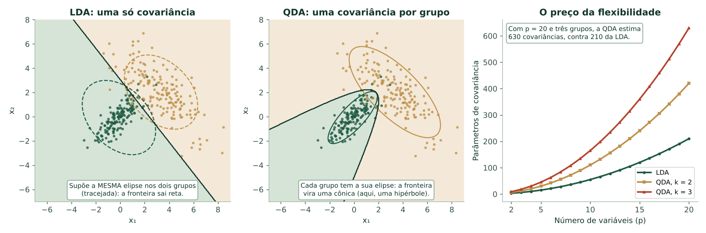
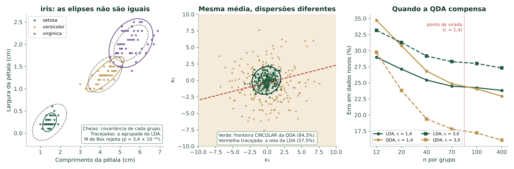

Análise discriminante quadrática (QDA)
Estima uma matriz de covariância por grupo, o que torna as fronteiras de classificação quadráticas em vez de lineares.
Comece por aqui
A análise discriminante linear supõe que todos os grupos compartilham a mesma matriz de covariância. A quadrática abandona essa suposição e estima uma matriz por grupo. O ganho é flexibilidade: as fronteiras deixam de ser hiperplanos e passam a ser superfícies quadráticas. O custo é o número de parâmetros, e é esse custo que decide, na prática, qual das duas usar.
Em iris o M de Box rejeita com \(p=3{,}4\times10^{-20}\), e ainda assim a LDA classifica melhor que a QDA: 147 acertos contra 146. O pressuposto de covariâncias iguais é falso, e assumi-lo mesmo assim sai barato. A pergunta correta é se o ganho de flexibilidade compensa a variância extra das estimativas — e isso se responde por validação cruzada, não por teste de hipótese.
O que é a análise discriminante quadrática
A derivação é a mesma da LDA até o penúltimo passo. Supondo que o grupo \(i\) seja \(N_p(\mu_i,\Sigma_i)\), a regra de Bayes leva a comparar \(\ln\left[\pi_i f_i(x)\right]\). A diferença é que agora \(\Sigma_i\) varia com \(i\): o termo \(-\tfrac12\ln|\Sigma_i|\) deixa de ser constante e o termo quadrático \(x^{\top}\Sigma_i^{-1}x\) deixa de se cancelar entre os grupos. A fronteira entre dois grupos vira uma superfície de segundo grau.

Três situações exigem fronteira curva: grupos com dispersões diferentes (um compacto dentro de um disperso), grupos com orientações diferentes (correlações de sinais opostos, como na figura acima) e grupos com a mesma média, em que nenhuma fronteira linear pode funcionar. Nos três, a LDA fracassa por construção, e não por falta de dados.
Pressupostos e como verificá-los
| Pressuposto | Por que importa | Como verificar |
|---|---|---|
| Normalidade multivariada em cada grupo | A regra vem da densidade normal. | Teste de Mardia e MVN::mvn() por grupo; a QDA é mais sensível a desvios que a LDA. |
| nᵢ > p em cada grupo | A covariância do grupo precisa ser invertível. | Conte as observações por grupo; o R recusa o ajuste se faltar. |
| nᵢ bem maior que p, na prática | Com nᵢ pouco acima de p a estimativa é instável. | Regra prática: ao menos 3 a 5 vezes p por grupo. |
| Observações independentes | Validação e erros-padrão pressupõem isso. | Delineamento. |
| Covariâncias realmente diferentes | Se forem iguais, a QDA só acrescenta variância. | M de Box como indício, validação cruzada como decisão. |
| Ausência de atípicos extremos | Covariâncias por grupo são muito sensíveis a eles. | Distâncias de Mahalanobis dentro de cada grupo. |
Use a QDA quando as três condições se verificarem juntas: o M de Box rejeita com folga, as determinantes das covariâncias diferem por ordens de grandeza, e cada grupo tem observações de sobra em relação ao número de variáveis. Faltando qualquer uma, compare as duas por validação cruzada e deixe o resultado decidir. A análise discriminante regularizada, que encolhe cada covariância de grupo em direção à agrupada, é a saída quando a resposta é "um pouco de cada".
Formulação e cálculo
A regra de classificação
O segundo termo é a distância de Mahalanobis ao quadrado, calculada com a covariância daquele grupo. Comparando dois grupos:
e o primeiro termo só desaparece quando \(S_1=S_2\) — caso em que a expressão se reduz à da LDA. A natureza da cônica resultante depende dos autovalores de \(S_1^{-1}-S_2^{-1}\): todos do mesmo sinal dão uma elipse, sinais mistos dão uma hipérbole.
Em que:
- \(S_i\)
- covariância amostral do grupo \(i\), com \(n_i-1\) graus de liberdade
- \(\lvert S_i\rvert\)
- determinante: mede o "volume" da dispersão do grupo
- \(\bar x_i\)
- vetor de médias do grupo \(i\)
- \(\pi_i\)
- probabilidade a priori do grupo \(i\)
- \(c\)
- constante que não depende de \(x\)
O número de parâmetros
| p | LDA | QDA com k = 2 | QDA com k = 3 |
|---|---|---|---|
| 2 | 3 | 6 | 9 |
| 5 | 15 | 30 | 45 |
| 10 | 55 | 110 | 165 |
| 20 | 210 | 420 | 630 |
É esta tabela que explica por que o pressuposto falso da LDA costuma sair barato: com 20 variáveis e três grupos, a QDA precisa estimar 630 covariâncias a partir dos mesmos dados com que a LDA estima 210.
Exemplo numérico
| Espécie | Determinante de Sᵢ | Traço de Sᵢ |
|---|---|---|
| setosa | 2,113 × 10⁻⁶ | 0,3092 |
| versicolor | 1,894 × 10⁻⁵ | 0,6248 |
| virginica | 1,327 × 10⁻⁴ | 0,8884 |
| agrupada | 4,732 × 10⁻⁵ | 0,6075 |
A determinante da virginica é 62,8 vezes a da setosa: as três espécies ocupam volumes muito diferentes no espaço das quatro medidas. O M de Box formaliza a comparação:
O pressuposto da LDA é inequivocamente falso. E, apesar disso, a QDA classifica pior: 146 acertos contra 147 por validação cruzada, com as duas regras discordando em uma única flor. O motivo está na tabela de parâmetros: a QDA estima 3 × 10 = 30 covariâncias onde a LDA estima 10, a partir das mesmas 150 flores.
Propriedades
- Com \(S_1=S_2=\dots=S_k\), a QDA se reduz exatamente à LDA.
- A fronteira entre dois grupos é uma superfície quadrática; em duas dimensões, uma cônica.
- O método não produz eixos canônicos: não há projeção de dimensão reduzida análoga a LD1 e LD2.
- Exige \(n_i>p\) em cada grupo para que \(S_i\) seja invertível.
- A análise discriminante regularizada de Friedman (1989) interpola entre as duas, com \(S_i(\lambda)=(1-\lambda)S_i+\lambda S_p\).
- É invariante a transformações lineares não singulares das variáveis, como a LDA.
- Com \(k=2\) e priores iguais, a regra equivale a comparar as distâncias de Mahalanobis corrigidas por \(\ln\lvert S_i\rvert\).
Como interpretar os resultados
| Elemento | O que informa | Cuidado |
|---|---|---|
| Group means | Os centroides. | Iguais aos da LDA. |
| Covariâncias por grupo | A forma e o volume de cada nuvem. | Compare determinantes e traços. |
| posterior | Probabilidade de cada grupo. | Mais extremas que as da LDA, por causa do termo quadrático. |
| Matriz de confusão da validação cruzada | O desempenho real. | É o número a comparar com o da LDA. |
| Discordâncias LDA × QDA | Onde a flexibilidade mudou algo. | Em iris, uma única flor. |
| M de Box | Indício de que as covariâncias diferem. | Não é critério de escolha. |
Um é usar a LDA sempre, ignorando que existem estruturas que nenhuma fronteira linear capta. O outro é usar a QDA sempre que o M de Box rejeita — e ele rejeita quase sempre, porque é sensível ao tamanho da amostra. A decisão é empírica: ajuste as duas, compare por validação cruzada e relate a comparação.
Como executar no R e em Python
Onde executar o código em Python
Não é preciso instalar nada: o Google Colab é um computador na nuvem, gratuito, que executa Python pelo navegador e já traz as bibliotecas usadas aqui (numpy, scipy e matplotlib).
A função é MASS::qda(), com a mesma interface de lda(): fórmula, CV = TRUE para a validação cruzada deixa-um-de-fora e predict() para classe e probabilidades a posteriori. A diferença aparece no objeto devolvido, que guarda uma matriz de escalonamento por grupo. Para a versão regularizada, klaR::rda() estima os parâmetros de encolhimento por validação. O M de Box sai de biotools::boxM(), e klaR::partimat() desenha as fronteiras aos pares de variáveis.
library(MASS)
mq <- qda(Species ~ ., data = iris)
qcv <- qda(Species ~ ., data = iris, CV = TRUE)
lcv <- lda(Species ~ ., data = iris, CV = TRUE)
c(LDA = mean(lcv$class == iris$Species), QDA = mean(qcv$class == iris$Species))
Exemplo de aplicação
Contexto dos dados
A ficha compara LDA e QDA em três situações: em iris, onde o pressuposto de covariâncias iguais é falso mas a LDA ainda assim ganha; em um conjunto fictício com a mesma média e dispersões muito diferentes, onde a LDA não tem como funcionar; e em uma simulação que localiza o ponto a partir do qual a QDA passa a compensar.
Código em R
# Análise discriminante quadrática: exemplo completo ----
# Pacotes: MASS (qda), biotools (M de Box), klaR (fronteiras), caret
# install.packages(c("MASS", "biotools", "klaR", "caret"))
data(iris)
# O pressuposto que distingue a QDA da LDA: covariâncias iguais ou não?
by(iris[, 1:4], iris$Species, function(x) round(det(cov(x)), 8))
library(biotools)
boxM(iris[, 1:4], iris$Species)
# Os dois ajustes, lado a lado
library(MASS)
ml <- lda(Species ~ ., data = iris)
mq <- qda(Species ~ ., data = iris)
mq # priores e médias; as covariâncias ficam em mq$scaling
# Reclassificação (otimista) e validação cruzada (a que se reporta)
table(Real = iris$Species, Predita = predict(ml)$class)
table(Real = iris$Species, Predita = predict(mq)$class)
lcv <- lda(Species ~ ., data = iris, CV = TRUE)
qcv <- qda(Species ~ ., data = iris, CV = TRUE)
mean(lcv$class == iris$Species)
mean(qcv$class == iris$Species)
table(LDA = lcv$class, QDA = qcv$class) # onde as duas discordam
which(lcv$class != qcv$class)
# Um caso em que a QDA é claramente superior: mesma média, dispersões
# muito diferentes (dados fictícios)
set.seed(7)
A <- MASS::mvrnorm(200, c(0, 0), diag(2)) # compacto
B <- MASS::mvrnorm(200, c(0, 0), 9 * diag(2)) # disperso
dd <- data.frame(x1 = c(A[,1], B[,1]), x2 = c(A[,2], B[,2]),
g = factor(rep(c("A", "B"), each = 200)))
boxM(dd[, 1:2], dd$g)
mean(lda(g ~ x1 + x2, data = dd, CV = TRUE)$class == dd$g)
mean(qda(g ~ x1 + x2, data = dd, CV = TRUE)$class == dd$g)
library(klaR)
partimat(g ~ x1 + x2, data = dd, method = "lda")
partimat(g ~ x1 + x2, data = dd, method = "qda")
# Quando n é pequeno, a QDA pode PERDER mesmo com o modelo a favor dela
# (a simulação completa está no código Python desta ficha)
set.seed(11)
sim <- function(n, c_, rep = 200, p = 5) {
res <- replicate(rep, {
Z <- rbind(MASS::mvrnorm(n, rep(0, p), diag(p)),
MASS::mvrnorm(n, rep(0.7, p), c_ * diag(p)))
g <- factor(rep(c("A", "B"), each = n))
Tt <- rbind(MASS::mvrnorm(1500, rep(0, p), diag(p)),
MASS::mvrnorm(1500, rep(0.7, p), c_ * diag(p)))
gt <- factor(rep(c("A", "B"), each = 1500))
d1 <- data.frame(Z, g); d2 <- data.frame(Tt)
names(d2) <- names(d1)[1:p]
c(mean(predict(lda(g ~ ., data = d1), d2)$class != gt),
mean(predict(qda(g ~ ., data = d1), d2)$class != gt))
})
rowMeans(res)
}
# sim(20, 1.4); sim(100, 1.4); sim(20, 3.0)
# Análise discriminante REGULARIZADA: interpola entre LDA e QDA
library(klaR)
rda(Species ~ ., data = iris) # estima lambda e gamma por validação
# Validação honesta com treino e teste
library(caret)
set.seed(1)
idx <- createDataPartition(iris$Species, p = 0.7, list = FALSE)
confusionMatrix(predict(qda(Species ~ ., data = iris[idx, ]),
iris[-idx, ])$class, iris[-idx, ]$Species)
A mesma análise em Python, com os resultados
Cole o código em um notebook do Google Colab ↗ e execute com Shift+Enter. Os valores abaixo são a saída desse código.
# Bibliotecas: numpy, scipy, matplotlib e scikit-learn (todas já no Google Colab)
import numpy as np
from scipy import stats
from sklearn.datasets import load_iris
np.set_printoptions(suppress=True)
# ===================================================================
# LDA e QDA, implementadas do zero, para que a diferença fique visível
# ===================================================================
def ajusta(X, g):
X = np.asarray(X, float); g = np.asarray(g)
niveis = np.unique(g); k = len(niveis); n, p = X.shape
medias = np.array([X[g == i].mean(axis=0) for i in niveis])
prior = np.array([np.mean(g == i) for i in niveis])
Sg = [np.cov(X[g == i], rowvar=False) for i in niveis] # por grupo
ni = np.array([np.sum(g == i) for i in niveis])
Sp = sum((ni[j]-1)*Sg[j] for j in range(k)) / (n - k) # agrupada
return niveis, medias, np.array(Sg), Sp, prior, ni
def escore_lda(X, medias, Sp, prior):
Si = np.linalg.inv(Sp)
return (np.asarray(X, float) @ Si @ medias.T
- 0.5*np.sum((medias @ Si)*medias, axis=1) + np.log(prior))
def escore_qda(X, medias, Sg, prior):
"""d_i(x) = -0,5 ln|S_i| - 0,5 (x-m_i)' S_i^-1 (x-m_i) + ln(pi_i)"""
X = np.asarray(X, float); out = np.empty((len(X), len(medias)))
for j in range(len(medias)):
Si = np.linalg.inv(Sg[j]); dif = X - medias[j]
out[:, j] = (-0.5*np.log(np.linalg.det(Sg[j]))
- 0.5*np.sum((dif @ Si)*dif, axis=1) + np.log(prior[j]))
return out
def valida_cruzada(X, g, metodo):
n = len(X); pred = np.empty(n, int)
for i in range(n):
m = np.ones(n, bool); m[i] = False
nv, me, Sg, Sp, pr, ni = ajusta(X[m], g[m])
pred[i] = (escore_qda(X[i:i+1], me, Sg, pr) if metodo == "qda"
else escore_lda(X[i:i+1], me, Sp, pr)).argmax()
return pred
def confusao(g, pred, k):
C = np.zeros((k, k), int)
for i in range(len(g)): C[g[i], pred[i]] += 1
return C
def box_m(X, g):
"""M de Box: testa a igualdade das matrizes de covariância."""
X = np.asarray(X, float); g = np.asarray(g)
niveis = np.unique(g); k = len(niveis); n, p = X.shape
ni = np.array([np.sum(g == i) for i in niveis])
Sg = [np.cov(X[g == i], rowvar=False) for i in niveis]
Sp = sum((ni[j]-1)*Sg[j] for j in range(k)) / (n - k)
M = (n-k)*np.log(np.linalg.det(Sp)) - sum((ni[j]-1)*np.log(np.linalg.det(Sg[j]))
for j in range(k))
c1 = (sum(1/(ni-1)) - 1/(n-k)) * (2*p*p + 3*p - 1)/(6*(p+1)*(k-1))
gl = p*(p+1)*(k-1)/2
return M*(1-c1), gl, stats.chi2.sf(M*(1-c1), gl)
# ===================================================================
# PARTE 1 - iris: a QDA onde a LDA já vai bem
# ===================================================================
d = load_iris(); X = d.data; g = d.target
nomes = ["setosa", "versicolor", "virginica"]
niveis, medias, Sg, Sp, prior, ni = ajusta(X, g)
n, p = X.shape; k = 3
print("iris: 150 flores, 4 medidas, 3 espécies")
print("\nAs três matrizes de covariância NÃO são iguais")
print(f"{'espécie':<12}{'determinante':>16}{'traço':>12}")
for j, nm in enumerate(nomes):
print(f"{nm:<12}{np.linalg.det(Sg[j]):>16.3e}{np.trace(Sg[j]):>12.4f}")
print(f"{'agrupada':<12}{np.linalg.det(Sp):>16.3e}{np.trace(Sp):>12.4f}")
print(f"A maior determinante é {np.linalg.det(Sg[2])/np.linalg.det(Sg[0]):.1f} "
f"vezes a menor.")
M, gl, pM = box_m(X, g)
print(f"\nM de Box = {M:.4f} | gl = {gl:.0f} | p = {pM:.3e}")
print("A igualdade das covariâncias é rejeitada, que é o pressuposto da LDA.")
print("Em princípio, portanto, a QDA seria a escolha. Veja o que acontece.")
pl = valida_cruzada(X, g, "lda"); pq = valida_cruzada(X, g, "qda")
Cl = confusao(g, pl, k); Cq = confusao(g, pq, k)
print("\nValidação cruzada deixa-um-de-fora")
print(f"{'real \\ predito':<16}" + "".join(f"{nm:>12}" for nm in nomes) + " | método")
for j, nm in enumerate(nomes):
print(f"{nm:<16}" + "".join(f"{c:>12d}" for c in Cl[j]) + " | LDA")
for j, nm in enumerate(nomes):
print(f"{nm:<16}" + "".join(f"{c:>12d}" for c in Cq[j]) + " | QDA")
print(f"LDA: {np.trace(Cl)}/{n} = {100*np.trace(Cl)/n:.2f}% de acerto "
f"({n-np.trace(Cl)} erros)")
print(f"QDA: {np.trace(Cq)}/{n} = {100*np.trace(Cq)/n:.2f}% de acerto "
f"({n-np.trace(Cq)} erros)")
dif = np.where(pl != pq)[0]
print(f"As duas regras discordam em {len(dif)} das {n} flores: {dif+1}")
print("\nO M de Box rejeita, mas a QDA não melhora o resultado. A razão é que a")
print("QDA estima k matrizes de covariância em vez de uma: em iris são 3 x 10 =")
print("30 parâmetros de covariância, contra 10 da LDA, com os mesmos 150 dados.")
print("A variância extra das estimativas consome o ganho de flexibilidade.")
# ===================================================================
# PARTE 2 - um caso em que a QDA é claramente superior
# ===================================================================
print("\n" + "=" * 70)
print("Dados fictícios em que a diferença aparece: dois grupos com a MESMA")
print("média e dispersões muito diferentes (um compacto dentro de um disperso).")
rng = np.random.default_rng(7)
nA = nB = 200
A = rng.multivariate_normal([0, 0], [[1.0, 0.0], [0.0, 1.0]], nA) # compacto
B = rng.multivariate_normal([0, 0], [[9.0, 0.0], [0.0, 9.0]], nB) # disperso
Y = np.vstack([A, B]); gy = np.r_[np.zeros(nA), np.ones(nB)].astype(int)
nv2, me2, Sg2, Sp2, pr2, ni2 = ajusta(Y, gy)
print(f"\nMédias: grupo A {np.round(me2[0],3)} | grupo B {np.round(me2[1],3)}")
print(f"Determinantes: A {np.linalg.det(Sg2[0]):.4f} | B {np.linalg.det(Sg2[1]):.4f}")
M2, gl2, pM2 = box_m(Y, gy)
print(f"M de Box = {M2:.2f} | gl = {gl2:.0f} | p = {pM2:.3e}")
pl2 = valida_cruzada(Y, gy, "lda"); pq2 = valida_cruzada(Y, gy, "qda")
Cl2 = confusao(gy, pl2, 2); Cq2 = confusao(gy, pq2, 2)
print(f"\n{'real \\ predito':<16}{'A':>8}{'B':>8} | método")
for j, nm in enumerate(["A", "B"]):
print(f"{nm:<16}{Cl2[j,0]:>8d}{Cl2[j,1]:>8d} | LDA")
for j, nm in enumerate(["A", "B"]):
print(f"{nm:<16}{Cq2[j,0]:>8d}{Cq2[j,1]:>8d} | QDA")
print(f"LDA: {100*np.trace(Cl2)/len(gy):.2f}% de acerto")
print(f"QDA: {100*np.trace(Cq2)/len(gy):.2f}% de acerto")
print("As duas médias POPULACIONAIS são iguais (as amostrais diferem apenas por")
print("flutuação), de modo que nenhuma fronteira LINEAR consegue separar os")
print("grupos: a LDA fica perto do acaso, com 57,5% onde 50% é o chute. A QDA")
print("desenha uma fronteira CIRCULAR em torno da origem, atribuindo ao grupo")
print("compacto o que está perto do centro, e chega a 84,3%.")
# ===================================================================
# PARTE 3 - a troca entre viés e variância, em função de n
# ===================================================================
print("\n" + "=" * 70)
print("Quando a QDA compensa? A resposta depende de n e do QUANTO as")
print("covariâncias diferem. Dois grupos normais em p = 5 dimensões, médias")
print("separadas por 0,7 em cada eixo, covariâncias I e c x I.")
print("Erro medido em 3.000 observações novas, média de 300 repetições.")
rng = np.random.default_rng(5)
for c, rotulo in [(1.4, "diferença MODERADA (c = 1,4)"),
(3.0, "diferença GRANDE (c = 3,0)")]:
print(f"\n{rotulo}")
print(f"{'n por grupo':>12}{'erro LDA':>12}{'erro QDA':>12}{'vencedor':>12}")
for nn in [12, 20, 40, 70, 100, 400]:
mu = np.zeros(5); mu2 = mu + 0.7
S1 = np.eye(5); S2 = c*np.eye(5)
el = []; eq = []
for _ in range(300):
Z = np.vstack([rng.multivariate_normal(mu, S1, nn),
rng.multivariate_normal(mu2, S2, nn)])
gz = np.r_[np.zeros(nn), np.ones(nn)].astype(int)
T = np.vstack([rng.multivariate_normal(mu, S1, 1500),
rng.multivariate_normal(mu2, S2, 1500)])
gt = np.r_[np.zeros(1500), np.ones(1500)].astype(int)
nv3, me3, Sg3, Sp3, pr3, ni3 = ajusta(Z, gz)
el.append(np.mean(escore_lda(T, me3, Sp3, pr3).argmax(axis=1) != gt))
eq.append(np.mean(escore_qda(T, me3, Sg3, pr3).argmax(axis=1) != gt))
a, b = 100*np.mean(el), 100*np.mean(eq)
print(f"{nn:>12}{a:>11.2f}%{b:>11.2f}%{('QDA' if b < a else 'LDA'):>12}")
print("\nCom diferença moderada entre as covariâncias, a LDA VENCE enquanto n é")
print("pequeno, mesmo sabendo-se que o modelo dela é falso: estimar duas")
print("matrizes de covariância em vez de uma custa variância, e esse custo supera")
print("o viés do modelo errado. O ponto de virada fica entre n = 70 e n = 100 por")
print("grupo. Com diferença grande, o viés da LDA é alto demais desde o início e")
print("a QDA vence em toda a faixa.")
print("\nParâmetros de covariância a estimar:")
for pp in [2, 5, 10, 20]:
print(f" p = {pp:>2}: LDA {pp*(pp+1)//2:>4} | QDA com k = 2: "
f"{2*pp*(pp+1)//2:>4} | QDA com k = 3: {3*pp*(pp+1)//2:>4}")
print("O número cresce com p², e é por isso que o ponto de virada sobe depressa")
print("com a dimensão. A análise discriminante REGULARIZADA interpola entre as")
print("duas, encolhendo cada covariância de grupo em direção à agrupada.")
Resultados da execução
iris: 150 flores, 4 medidas, 3 espécies
As três matrizes de covariância NÃO são iguais
espécie determinante traço
setosa 2.113e-06 0.3092
versicolor 1.894e-05 0.6248
virginica 1.327e-04 0.8884
agrupada 4.732e-05 0.6075
A maior determinante é 62.8 vezes a menor.
M de Box = 140.9430 | gl = 20 | p = 3.352e-20
A igualdade das covariâncias é rejeitada, que é o pressuposto da LDA.
Em princípio, portanto, a QDA seria a escolha. Veja o que acontece.
Validação cruzada deixa-um-de-fora
real \ predito setosa versicolor virginica | método
setosa 50 0 0 | LDA
versicolor 0 48 2 | LDA
virginica 0 1 49 | LDA
setosa 50 0 0 | QDA
versicolor 0 47 3 | QDA
virginica 0 1 49 | QDA
LDA: 147/150 = 98.00% de acerto (3 erros)
QDA: 146/150 = 97.33% de acerto (4 erros)
As duas regras discordam em 1 das 150 flores: [69]
O M de Box rejeita, mas a QDA não melhora o resultado. A razão é que a
QDA estima k matrizes de covariância em vez de uma: em iris são 3 x 10 =
30 parâmetros de covariância, contra 10 da LDA, com os mesmos 150 dados.
A variância extra das estimativas consome o ganho de flexibilidade.
======================================================================
Dados fictícios em que a diferença aparece: dois grupos com a MESMA
média e dispersões muito diferentes (um compacto dentro de um disperso).
Médias: grupo A [-0.113 -0.098] | grupo B [ 0.032 -0.67 ]
Determinantes: A 0.7229 | B 68.9480
M de Box = 431.04 | gl = 3 | p = 4.185e-93
real \ predito A B | método
A 125 75 | LDA
B 95 105 | LDA
A 180 20 | QDA
B 43 157 | QDA
LDA: 57.50% de acerto
QDA: 84.25% de acerto
As duas médias POPULACIONAIS são iguais (as amostrais diferem apenas por
flutuação), de modo que nenhuma fronteira LINEAR consegue separar os
grupos: a LDA fica perto do acaso, com 57,5% onde 50% é o chute. A QDA
desenha uma fronteira CIRCULAR em torno da origem, atribuindo ao grupo
compacto o que está perto do centro, e chega a 84,3%.
======================================================================
Quando a QDA compensa? A resposta depende de n e do QUANTO as
covariâncias diferem. Dois grupos normais em p = 5 dimensões, médias
separadas por 0,7 em cada eixo, covariâncias I e c x I.
Erro medido em 3.000 observações novas, média de 300 repetições.
diferença MODERADA (c = 1,4)
n por grupo erro LDA erro QDA vencedor
12 28.96% 34.72% LDA
20 27.12% 30.76% LDA
40 25.43% 26.83% LDA
70 24.48% 24.86% LDA
100 24.24% 24.06% QDA
400 23.82% 22.92% QDA
diferença GRANDE (c = 3,0)
n por grupo erro LDA erro QDA vencedor
12 33.15% 29.73% QDA
20 31.27% 23.81% QDA
40 29.17% 19.39% QDA
70 28.29% 17.82% QDA
100 28.01% 17.21% QDA
400 27.30% 16.08% QDA
Com diferença moderada entre as covariâncias, a LDA VENCE enquanto n é
pequeno, mesmo sabendo-se que o modelo dela é falso: estimar duas
matrizes de covariância em vez de uma custa variância, e esse custo supera
o viés do modelo errado. O ponto de virada fica entre n = 70 e n = 100 por
grupo. Com diferença grande, o viés da LDA é alto demais desde o início e
a QDA vence em toda a faixa.
Parâmetros de covariância a estimar:
p = 2: LDA 3 | QDA com k = 2: 6 | QDA com k = 3: 9
p = 5: LDA 15 | QDA com k = 2: 30 | QDA com k = 3: 45
p = 10: LDA 55 | QDA com k = 2: 110 | QDA com k = 3: 165
p = 20: LDA 210 | QDA com k = 2: 420 | QDA com k = 3: 630
O número cresce com p², e é por isso que o ponto de virada sobe depressa
com a dimensão. A análise discriminante REGULARIZADA interpola entre as
duas, encolhendo cada covariância de grupo em direção à agrupada.
iris: as elipses cheias são as covariâncias de cada espécie e as tracejadas, a agrupada que a LDA impõe às três. No centro, o caso fictício de mesma média: a QDA desenha uma fronteira circular em torno do grupo compacto e acerta 84,3%, enquanto a reta da LDA fica em 57,5%, pouco acima do acaso. À direita, o erro em dados novos em função do tamanho da amostra, para duas intensidades de diferença entre as covariâncias. Fonte: o autor.| Regra | Acertos | Erro |
|---|---|---|
| LDA | 147 de 150 (98,00%) | 3 flores |
| QDA | 146 de 150 (97,33%) | 4 flores |
| Discordância entre as duas | 1 flor (a de número 69) | — |
| M de Box | χ² = 140,94; gl = 20; p = 3,35 × 10⁻²⁰ | Rejeita a igualdade. |
| Elemento | Valor |
|---|---|
| Determinante da covariância de A | 0,7229 |
| Determinante da covariância de B | 68,9480 |
| M de Box | χ² = 431,04; gl = 3; p = 4,2 × 10⁻⁹³ |
| Acerto da LDA (validação cruzada) | 57,50% |
| Acerto da QDA (validação cruzada) | 84,25% |
| n por grupo | LDA (c = 1,4) | QDA (c = 1,4) | LDA (c = 3,0) | QDA (c = 3,0) |
|---|---|---|---|---|
| 12 | 28,96% | 34,72% | 33,15% | 29,73% |
| 20 | 27,12% | 30,76% | 31,27% | 23,81% |
| 40 | 25,43% | 26,83% | 29,17% | 19,39% |
| 70 | 24,48% | 24,86% | 28,29% | 17,82% |
| 100 | 24,24% | 24,06% | 28,01% | 17,21% |
| 400 | 23,82% | 22,92% | 27,30% | 16,08% |
Leitura de iris: as três espécies têm dispersões muito diferentes — a determinante da virginica é 62,8 vezes a da setosa — e o M de Box rejeita a igualdade sem margem para dúvida. A conclusão automática seria usar a QDA. A validação cruzada diz o contrário: a QDA erra uma flor a mais. As duas regras discordam em uma única observação das 150, o que mostra que a flexibilidade extra praticamente não foi usada. Com quatro variáveis e três grupos, a QDA estima 30 covariâncias onde a LDA estima 10, e o ruído dessas estimativas anula o ganho.
Leitura do caso fictício: aqui a LDA não tem como funcionar, e isso é uma questão de geometria, não de amostra. Os dois grupos têm a mesma média populacional, de modo que qualquer fronteira linear deixa metade de cada grupo de cada lado — a LDA fica em 57,5%, pouco acima dos 50% do chute. A QDA reconhece que um grupo é compacto e o outro disperso, desenha uma fronteira circular em torno da origem e chega a 84,3%. Nenhum volume de dados resolveria o problema da LDA: o modelo dela está errado quanto à forma, não quanto aos parâmetros.
Leitura da simulação: as duas colunas da esquerda correspondem a uma diferença moderada entre as covariâncias. A LDA vence até cerca de n = 70 por grupo, mesmo sabendo-se de antemão que o modelo dela é falso — a economia de parâmetros compensa o viés. O ponto de virada fica entre 70 e 100, e a partir dali a QDA passa à frente, com vantagem crescente. As duas colunas da direita correspondem a uma diferença grande: aí o viés da LDA é alto demais desde o começo, e a QDA vence em toda a faixa, chegando a errar menos da metade.
A regra prática que se extrai disso tem três ingredientes: o quanto as covariâncias diferem, o tamanho da amostra por grupo e o número de variáveis. Como o número de parâmetros da QDA cresce com o quadrado de \(p\), o ponto de virada sobe depressa com a dimensão. Quando a resposta é ambígua, a análise discriminante regularizada evita a escolha binária, encolhendo cada covariância de grupo em direção à agrupada por um fator estimado nos próprios dados.
Erros comuns
| Erro | Como evitar |
|---|---|
| Usar a QDA só porque o M de Box rejeitou | Ele rejeita quase sempre com n grande; decida por validação cruzada. |
| Usar a QDA com nᵢ próximo de p | A covariância do grupo fica instável ou singular. |
| Reportar o acerto da reclassificação | A QDA infla mais que a LDA, por ter mais parâmetros. |
| Procurar eixos canônicos na QDA | Ela não os produz: não há LD1 nem LD2. |
| Ignorar observações atípicas | Covariâncias por grupo são muito sensíveis a elas. |
| Supor que mais flexibilidade é sempre melhor | Em iris a QDA erra mais que a LDA. |
| Esquecer a opção regularizada | klaR::rda() interpola entre as duas. |
| Aplicar a dados fortemente não normais | A QDA é mais sensível à não normalidade que a LDA. |
| Comparar LDA e QDA pelo mesmo conjunto usado no ajuste | Use validação cruzada ou um conjunto de teste. |
Alternativas e fluxo de trabalho
| Procedimento | Quando preferir |
|---|---|
| Análise discriminante linear | Covariâncias parecidas, ou n pequeno em relação a p. |
| Análise discriminante regularizada | Quando a escolha entre LDA e QDA é ambígua. |
| Naive Bayes gaussiano | p muito grande: supõe covariâncias diagonais por grupo. |
| Regressão logística com termos quadráticos | Fronteira curva sem supor normalidade. |
| k vizinhos mais próximos | Fronteiras muito irregulares e n grande. |
| SVM com núcleo radial | Fronteiras não lineares de forma arbitrária. |
| Florestas aleatórias | Interações complexas, variáveis mistas, sem pressupostos distribucionais. |
| Modelos de mistura (mclust) | Quando cada grupo pode ser, ele próprio, multimodal. |
- Confirme que cada grupo tem nᵢ bem maior que p.
- Compare as determinantes e os traços das covariâncias por grupo.
- Aplique o M de Box como indício, não como decisão.
- Verifique a normalidade multivariada dentro de cada grupo.
- Ajuste LDA e QDA e compare por validação cruzada.
- Se a diferença for pequena, prefira a mais simples ou use a regularizada.
- Examine onde as duas regras discordam: é ali que a flexibilidade atuou.
- Reporte a comparação, e não apenas o resultado do modelo escolhido.
Referências desta ficha
- SMITH, Cedric A. B. Some examples of discrimination. Annals of Eugenics, v. 13, n. 1, p. 272-282, 1947.
- WELCH, B. L. Note on discriminant functions. Biometrika, v. 31, n. 1-2, p. 218-220, 1939.
- BOX, G. E. P. A general distribution theory for a class of likelihood criteria. Biometrika, v. 36, n. 3-4, p. 317-346, 1949.
- MARKS, S.; DUNN, Olive Jean. Discriminant functions when covariance matrices are unequal. Journal of the American Statistical Association, v. 69, n. 346, p. 555-559, 1974.
- FRIEDMAN, Jerome H. Regularized discriminant analysis. Journal of the American Statistical Association, v. 84, n. 405, p. 165-175, 1989.
- BENSMAIL, Halima; CELEUX, Gilles. Regularized Gaussian discriminant analysis through eigenvalue decomposition. Journal of the American Statistical Association, v. 91, n. 436, p. 1743-1748, 1996.
- LACHENBRUCH, Peter A.; MICKEY, M. Ray. Estimation of error rates in discriminant analysis. Technometrics, v. 10, n. 1, p. 1-11, 1968.
- JOHNSON, Richard A.; WICHERN, Dean W. Applied multivariate statistical analysis. 6. ed. Upper Saddle River: Pearson, 2007.
- MARDIA, Kanti V.; KENT, John T.; BIBBY, John M. Multivariate analysis. London: Academic Press, 1979.
- HASTIE, Trevor; TIBSHIRANI, Robert; FRIEDMAN, Jerome. The elements of statistical learning. 2. ed. New York: Springer, 2009.
- JAMES, Gareth; WITTEN, Daniela; HASTIE, Trevor; TIBSHIRANI, Robert. An introduction to statistical learning: with applications in R. 2. ed. New York: Springer, 2021.
- ANDERSON, Edgar. The species problem in Iris. Annals of the Missouri Botanical Garden, v. 23, n. 3, p. 457-509, 1936. (Conjunto de dados
iris, pacotedatasetsdo R.) - FISHER, Ronald A. The use of multiple measurements in taxonomic problems. Annals of Eugenics, v. 7, n. 2, p. 179-188, 1936.
- VENABLES, William N.; RIPLEY, Brian D. Modern applied statistics with S. 4. ed. New York: Springer, 2002. (Pacote
MASS, funçõesldaeqda.) - WEIHS, Claus; LIGGES, Uwe; LUEBKE, Karsten; RAABE, Nils. klaR: analyzing German business cycles. In: Data analysis and decision support. Berlin: Springer, 2005. p. 335-343. (Funções
rdaepartimat.) - DA SILVA, Anderson Rodrigo. biotools: tools for biometry and applied statistics in agricultural science. R package. Disponível em: https://CRAN.R-project.org/package=biotools.
- PEDREGOSA, Fabian et al. Scikit-learn: machine learning in Python. Journal of Machine Learning Research, v. 12, p. 2825-2830, 2011.
- POSIT TEAM. RStudio: integrated development environment for R. Boston: Posit Software, PBC. Disponível em: https://posit.co/download/rstudio-desktop/.
- VIRTANEN, Pauli et al. SciPy 1.0: fundamental algorithms for scientific computing in Python. Nature Methods, v. 17, p. 261-272, 2020. DOI: 10.1038/s41592-019-0686-2. (Funções do módulo
scipy.stats.) - HARRIS, Charles R. et al. Array programming with NumPy. Nature, v. 585, p. 357-362, 2020. DOI: 10.1038/s41586-020-2649-2.
- HUNTER, John D. Matplotlib: a 2D graphics environment. Computing in Science & Engineering, v. 9, n. 3, p. 90-95, 2007.
- GOOGLE. Google Colaboratory. Disponível em: https://colab.research.google.com/.
- As figuras desta ficha foram elaboradas pelo autor.

Prof. Dr. Cássius Henrique Xavier Oliveira
Professor · ICTIN/UFLA · Estatística, Confiabilidade e Ciência de Dados.
Conheça minha trajetória e projetos →